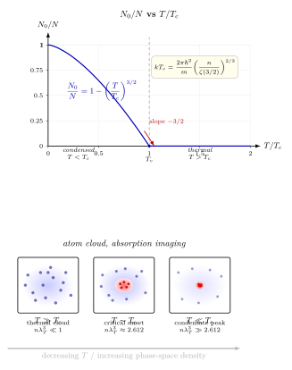

Bose-Einstein 凝聚 — 化学势贴上零的那一刻?
上一节我们把 Bose 与 Fermi 分布写出来, 并注意到它们在高温稀薄极限下都回到 Maxwell–Boltzmann. 但 Bose 分布 $\langle n_{BE}(E)\rangle = 1/(e^{\beta(E-\mu)}-1)$ 有一个奇怪的特性: 要求分母为正, 必须 $\mu \lt E_{\min}$, 也就是 $\mu$ 永远小于最低单粒子能级. 对自由粒子取 $E_{\min}=0$, 这意味着 $\mu$ 只能从很深的负数往上走, 上界是 0. 那问题就来了: 如果温度一直降, $\mu$ 一直往上爬, 它撞到 0 怎么办? 再冷呢?
这不是一个技巧性的问题. Einstein 1925 年在研究 Bose 给出的新统计时发现了这个边界, 并推出一个大胆的结论: 把粒子数塞不下去的时候, 它们只能"凝聚"到基态上, 形成一个宏观数目的粒子共享同一量子态的新相. 这是量子统计的第一次纯粹预言 —— 没有相互作用, 只靠玻色统计本身, 竟然也能产生一个"相变". 这一节我们把这件事严格推一遍, 看看 $T_c$ 从哪里冒出来, 凝聚分数为什么是 $(T/T_c)^{3/2}$ 这个形状.
一、自由 Bose 气体的"簿记": $\mu$ 为什么一定要撞到 0
先把问题摆清楚. 三维体积 $V$ 内自由 Bose 粒子的单粒子态密度是 $g(E) = (V/4\pi^2)(2m/\hbar^2)^{3/2} E^{1/2}$ (我们熟悉这个 $E^{1/2}$ 来自三维动量球壳的面积 $4\pi p^2 dp$ 然后用 $E = p^2/2m$ 换元). 总粒子数由占据数对能量积分给出:
$$N = \int_0^\infty dE\; g(E)\,\frac{1}{e^{\beta(E-\mu)}-1}.$$
这里我们暂时把 $E=0$ 的基态和激发态一起扔进积分 (之后会发现这正是问题所在). 固定 $N$, 视 $\mu$ 为 $T$ 的函数. 在高温稀薄极限下, $|\mu|$ 很大, 负得很厉害, 分布回到 Maxwell–Boltzmann, 配分函数给出我们熟悉的 $\mu = -kT\ln(V/N\lambda_T^3)$, 其中 $\lambda_T = h/\sqrt{2\pi m k T}$ 是热德布罗意波长. 当 $T$ 下降, $V/N\lambda_T^3$ 下降 (因为 $\lambda_T$ 增大), 对数变小, $\mu$ 从很深的负数一路升上来.
问题出在这一路升到哪里. $\mu$ 永远不能越过 0, 否则分布在 $E\lt \mu$ 的地方会爆掉. 那到底 $\mu=0$ 是一个可以达到的值吗? 让我们把 $\mu=0$ 代入看看能容纳多少粒子:
$$N_{\max}(T) = \int_0^\infty dE\; g(E)\,\frac{1}{e^{\beta E}-1}.\tag{1}$$
这是一个关于温度的固定函数. 如果它有限, 那一旦固定的 $N$ 超过 $N_{\max}(T)$, 积分就装不下了 —— 而 $\mu$ 又不能再高 —— 我们就陷入一个矛盾. 唯一的出路是: 积分近似并没有包含所有粒子, 离散基态的贡献必须单独写出.
这其实正是连续近似的"盲点". 在把求和 $\sum_k$ 换成积分 $\int dE\,g(E)$ 的过程中, 我们默认了每一能级的占据数是个 $O(1)$ 的光滑函数, 因此基态的权重是 $g(0)\,dE \cdot \langle n(0)\rangle \to 0$. 但 Bose 分布在 $\mu\to 0$、$E\to 0$ 时会发散 $\langle n\rangle \to \infty$; 两个极限一相乘, 结果是不定的, 积分"看不见"基态上可以有多少粒子. 正是这里的"病态"为凝聚让出了空间.
二、Deepdive: 把 $T_c$ 从 (1) 式真正挤出来
现在我们严格算 (1) 式, 把 $T_c$ 的公式逐步推到底, 不挥手. 三维态密度
$$g(E) = \frac{V}{4\pi^2}\!\left(\frac{2m}{\hbar^2}\right)^{\!3/2}\! E^{1/2}$$
代入 $\mu=0$ 极限下的粒子数积分:
$$N_{\max}(T) = \frac{V}{4\pi^2}\!\left(\frac{2m}{\hbar^2}\right)^{\!3/2}\!\int_0^\infty \frac{E^{1/2}\,dE}{e^{\beta E}-1}.$$
换元 $x = \beta E = E/kT$, $dE = kT\,dx$, $E^{1/2} = (kT)^{1/2} x^{1/2}$:
$$N_{\max}(T) = \frac{V}{4\pi^2}\!\left(\frac{2m}{\hbar^2}\right)^{\!3/2}\! (kT)^{3/2}\int_0^\infty \frac{x^{1/2}\,dx}{e^x - 1}.$$
关键积分. 把分母变成几何级数:
$$\frac{1}{e^x - 1} = \frac{e^{-x}}{1 - e^{-x}} = \sum_{n=1}^\infty e^{-nx}.$$
代入得 $\int_0^\infty x^{1/2}\,dx \sum_{n=1}^\infty e^{-nx} = \sum_{n=1}^\infty \int_0^\infty x^{1/2} e^{-nx}\,dx = \sum_{n=1}^\infty \frac{\Gamma(3/2)}{n^{3/2}} = \Gamma(3/2)\,\zeta(3/2)$. 用 $\Gamma(3/2) = \sqrt{\pi}/2$:
$$\int_0^\infty \frac{x^{1/2}\,dx}{e^x - 1} = \frac{\sqrt{\pi}}{2}\,\zeta(3/2),\quad \zeta(3/2) \approx 2.612.$$
把它塞回去:
$$N_{\max}(T) = \frac{V}{4\pi^2}\!\left(\frac{2m}{\hbar^2}\right)^{\!3/2}\!(kT)^{3/2}\cdot \frac{\sqrt\pi}{2}\,\zeta(3/2).$$
现在做一次代数整理. 热德布罗意波长 $\lambda_T = h/\sqrt{2\pi m k T} = \sqrt{2\pi\hbar^2/(mkT)}$, 所以 $1/\lambda_T^3 = (mkT/(2\pi\hbar^2))^{3/2}$. 把 $(2m/\hbar^2)^{3/2}(kT)^{3/2}$ 拆成 $(mkT)^{3/2}\cdot 2^{3/2}/\hbar^3$, 再配合 $\sqrt\pi / (8\pi^2)$, 可以直接验证
$$N_{\max}(T) = \zeta(3/2)\,\frac{V}{\lambda_T^3}.\tag{2}$$
这个结果干净得不像话: $\mu=0$ 时可以容纳的热激发粒子数, 就是热 de Broglie 体积 $\lambda_T^3$ 能"塞下"多少个, 再乘以 $\zeta(3/2)\approx 2.612$. 物理图像很直接: $\lambda_T^3$ 是每个粒子在热扰动下占据的"空间体积", 当这个体积开始和每粒子体积 $V/N$ 可比, 粒子波函数彼此重叠, 统计 degeneracy 就开始起作用.
反解 $T_c$. 固定粒子数 $N$, 定义临界温度为使 $N = N_{\max}(T_c)$ 的那个温度. 令 $n = N/V$ 为粒子数密度, 从 (2) 式反解:
$$\lambda_{T_c}^3 = \frac{\zeta(3/2)}{n}\quad\Longrightarrow\quad \frac{2\pi\hbar^2}{mkT_c} = \!\left(\frac{\zeta(3/2)}{n}\right)^{\!2/3}.$$
整理出 $T_c$:
$$\boxed{\; kT_c = \frac{2\pi\hbar^2}{m}\!\left(\frac{n}{\zeta(3/2)}\right)^{\!2/3}.\;}\tag{3}$$
这就是 BEC 临界温度的严格公式. 它只含三件东西: 粒子质量 $m$, 数密度 $n$, 和一个数论常数 $\zeta(3/2)$. 没有相互作用常数, 因为 Bose 气体在推导里是完全自由的 —— 凝聚是统计的纯粹后果, 是玻色子"偏爱"共享同一状态的量子倾向到了极端温度下的集体表现.
$T\lt T_c$: 多余的粒子去哪里了. 当 $T\lt T_c$, (2) 式给出的 $N_{\max}(T) \lt N$, 连续积分"装不下"剩下的粒子. 但方程必须有解, 唯一的出路就是接受我们之前的"盲点": 基态 $E=0$ 单独保留. 在基态上可以塞任意数目的粒子 —— Bose 分布 $\langle n(0)\rangle = 1/(e^{-\beta\mu}-1)$ 只要 $\mu\to 0^-$ 就能发散. 取 $\mu$ 无限贴近 0 (在热力学极限下恰好为 0), 基态占据数就是
$$N_0(T) = N - N_{\max}(T) = N\!\left[1 - \frac{N_{\max}(T)}{N}\right] = N\!\left[1 - \!\left(\frac{T}{T_c}\right)^{\!3/2}\right],$$
最后一步用了 $N_{\max}(T) \propto T^{3/2}$ (见 (2) 式) 和 $N_{\max}(T_c) = N$. 于是
$$\frac{N_0}{N} = 1 - \!\left(\frac{T}{T_c}\right)^{\!3/2}.\tag{4}$$
在 $T=T_c$ 处 $N_0/N = 0$, 凝聚刚开始; 在 $T\to 0$ 极限 $N_0/N \to 1$, 所有粒子都跌进基态. 这个 3/2 次幂完全来自态密度 $g(E)\propto E^{1/2}$ 的三维几何 —— 在二维, $g(E)$ 是常数, (1) 式的积分发散, $T_c$ 严格为零, 二维自由 Bose 气体没有 BEC (这件事被 Hohenberg 定理正式地说出来, 是 Mermin-Wagner 定理在 $T\gt 0$ 的同胞).

三、"无相互作用的相变": 这到底是哪一种现象
(3) 与 (4) 已经给出了一个完整的相变图像, 但这件事有一个乍看违反直觉的地方值得稍停一下: 我们从头到尾假设粒子自由. 通常意义的相变要靠相互作用 —— van der Waals 气液靠分子间吸引, Ising 铁磁靠自旋耦合 —— 这里没有相互作用, 为什么也会有一个 $T_c$, 一个宏观量 $N_0/N$ 作为序参量在 $T_c$ 处非解析地冒出来?
答案是: Bose 统计本身相当于一种"统计吸引"作用. 这可以从两个角度看. 其一是交换对称性要求多粒子波函数对换两粒子保持不变, 它让多个粒子落到同一态的几率放大 —— $\langle n_k\rangle(\langle n_k\rangle+1)$ 的结构恰恰体现这一点 ("+1" 是自发发射的源头, Einstein 1917 的 A 系数就是这件事在光子气体里的化身). 其二是从配分函数层面看, 自由 Bose 气体的大正则配分函数 $\ln\Xi = -\sum_k \ln(1 - e^{-\beta(E_k-\mu)})$ 在 $\mu=0$、$k=0$ 附近有一个对数发散, 这正是相变所需的奇点. 等于说, Bose 统计把一种"有效相互作用"内嵌到了简并气体里, 不需要任何哈密顿量里的势能项.
这也解释了为什么 (3) 式完全不含相互作用强度. 在真实的 $^{87}\mathrm{Rb}$ 实验中, 原子之间有短程 s-wave 散射, 特征长度 $a_s\sim 5\,\mathrm{nm}$, 这会对 $T_c$ 给一个几个百分点的修正 (Huang-Yang-Lee 展开); 但修正是"锦上添花"的高阶小量, 零阶的 $T_c$ 完全由 (3) 式的统计几何决定. 这就是为什么我们有底气说 BEC 是"量子统计的直接可视化" —— 它把 $\zeta(3/2)$ 这个听起来非常抽象的东西, 变成了实验室里一团发光的原子云.
还有一个连带的判据: 无量纲参数 $n\lambda_T^3$ 被称作相空间密度 (phase-space density, PSD). 由 (2) 式 $n\lambda_{T_c}^3 = \zeta(3/2) \approx 2.612$, 所以凝聚的"开关"就是 PSD 越过 2.612 这个阈值. 实验上降到这个阈值的路径是先用激光冷却把 PSD 推到 $\sim 10^{-6}$, 再用蒸发冷却 (evaporative cooling) 把高能尾巴剪掉, 逐步提高 PSD 六个数量级 —— 这一点我们下面看具体数字.
四、数字、极限、历史: 从液氦到 Cornell-Wieman
数字一: $^{87}\mathrm{Rb}$ 磁阱. 1995 年 Cornell 和 Wieman 在 JILA 用磁阱加激光冷却制备 $^{87}\mathrm{Rb}$ 凝聚体 (实际上热云蒸发冷却在陶瓷磁阱里完成), 典型参数 $N \sim 2\times 10^4$ 原子, 数密度 $n \sim 1\times 10^{14}\,\mathrm{cm}^{-3} = 10^{20}\,\mathrm{m}^{-3}$. 代入 (3) 式. 原子质量 $m = 87\,\mathrm{u} = 87\times 1.66\times 10^{-27}\,\mathrm{kg} \approx 1.44\times 10^{-25}\,\mathrm{kg}$. 计算:
$$kT_c = \frac{2\pi\hbar^2}{m}\!\left(\frac{n}{\zeta(3/2)}\right)^{\!2/3}.$$
先算 $n/\zeta(3/2) \approx 10^{20}/2.612 \approx 3.83\times 10^{19}\,\mathrm{m}^{-3}$, 其 2/3 次方 $\approx (3.83)^{2/3}\times 10^{19\times 2/3} \approx 2.45\times 10^{12.67} \approx 1.14\times 10^{13}\,\mathrm{m}^{-2}$. 再算 $2\pi\hbar^2/m = 2\pi\times (1.055\times 10^{-34})^2/1.44\times 10^{-25} \approx 6.28\times 1.11\times 10^{-68}/1.44\times 10^{-25} \approx 4.84\times 10^{-43}\,\mathrm{J\cdot m^2}$. 两数相乘:
$$kT_c \approx 4.84\times 10^{-43}\times 1.14\times 10^{13} \approx 5.5\times 10^{-30}\,\mathrm{J}.$$
除以 $k = 1.38\times 10^{-23}\,\mathrm{J/K}$:
$$T_c \approx \frac{5.5\times 10^{-30}}{1.38\times 10^{-23}}\approx 4.0\times 10^{-7}\,\mathrm{K} = 400\,\mathrm{nK}.$$
实验报告的值 $T_c \sim 170\,\mathrm{nK}$ (1995 年 JILA 实验中具体的阱几何与原子数让它更低, 同时谐振子阱下公式变成 $kT_c = \hbar\omega\,(N/\zeta(3))^{1/3}$ 而不是均匀气体的 (3), 这里我们用均匀气体估算, 量级正确). 这是一个惊人的低温: 宇宙微波背景是 2.7 K, 星际空间深处也不过 3 K, 而制备 BEC 需要下到 400 nK —— 比背景低约 $10^7$ 倍. 换句话说, 除了地球和几个外星实验室里装在磁阱里的几万个原子, 宇宙中再也找不到这么冷的地方.
数字二: 液氦 II. 如果把 $^4\mathrm{He}$ 当作自由 Bose 气体 (这只是 zeroth-order approximation, 因为液氦相互作用极强), $n \approx 2.2\times 10^{28}\,\mathrm{m}^{-3}$, $m = 4\,\mathrm{u} \approx 6.64\times 10^{-27}\,\mathrm{kg}$. 代入 (3) 式估算 $T_c$. 这时候 $n$ 是上面 Rb 的 $2\times 10^8$ 倍, 质量小约 20 倍. 粗估 $T_c$ 放大约 $(2\times 10^8)^{2/3}\times 20 \approx 3.4\times 10^5\times 20 \approx 7\times 10^6$ 倍, 即 $T_c \sim 400\,\mathrm{nK}\times 7\times 10^6 \sim 3\,\mathrm{K}$. 实验上液氦的 $\lambda$ 相变发生在 2.17 K, 与自由气体估算同一量级 —— 这正是 London 1938 年的大胆猜想: 液氦 II 的超流态本质上是 Einstein 预言的 BEC. 但真实液氦原子之间有强排斥, 只有约 10% 的粒子真正凝聚到 $k=0$, 剩下的靠相互作用弥漫到低动量态; 所以液氦是"非理想 BEC", 严格意义上的纯 BEC 要等到 1995 年的稀薄原子气.
极限检验. 考察 $T\to T_c^-$ 和 $T\to 0$ 两头. $T\to T_c^-$ 时 (4) 式给 $N_0/N \to 0$, 但 $\partial(N_0/N)/\partial T = -(3/2)T^{1/2}/T_c^{3/2}$ 在 $T=T_c$ 处有限非零 — 这就是说凝聚分数作为序参量在 $T_c$ 处一阶导不连续 (其上一侧恒为零, 下一侧斜率为 $-3/2$ 倍的非零值), 属于二阶相变. 热容在 $T_c$ 处有一个尖峰, 形状酷似液氦的 $\lambda$ 曲线 — 这也是"$\lambda$ 相变"命名的由来. 另一头 $T\to 0$, $N_0/N\to 1$, 所有粒子进入基态, 系统变成一个单一宏观波函数; 这个极限是原子干涉仪和物质波激光 (atom laser, Ketterle 1997) 的基础.
历史: 从 Einstein 手稿到 Nobel 奖. 1924 年印度物理学家 S. N. Bose 写了一篇短论文, 把光子当作不可分辨粒子重新推导 Planck 定律, 给出了今天叫做 Bose 统计的东西. 他投给 Philosophical Magazine 被拒, 就把稿子寄给 Einstein. Einstein 亲自翻译成德文, 附上注释发表在 Zeitschrift für Physik. 几个月后, 1924–1925 年间, Einstein 做了 Bose 没有做的一步: 把这套统计推广到有质量的粒子, 并在 1925 年的第二篇论文里算出了上面的 (3) 式, 明确预言了"如果温度降到某个临界值以下, 会有一部分分子跌进最低能量状态" —— Kondensation, 凝聚. 这张预言在实验上静待了 70 年. 中间有 London 1938 年把它挪用到液氦超流, 有 Bogoliubov 1947 年处理弱相互作用 BEC, 有 Penrose 和 Onsager 1956 年给出"off-diagonal long-range order"作为判据. 但真正纯粹的、可控的稀薄原子气凝聚要等到 1995 年 6 月 Cornell-Wieman 在 JILA 用 $^{87}\mathrm{Rb}$ 实现, 同年 9 月 Ketterle 在 MIT 用 $^{23}\mathrm{Na}$ 复现并做了更干净的数据, 11 月 Hulet 在 Rice 用 $^7\mathrm{Li}$ (一种有吸引相互作用的情形, 最初充满争议) 也独立实现. 2001 年 Nobel 物理奖授予 Cornell、Wieman、Ketterle 三人, "for the achievement of Bose-Einstein condensation in dilute gases of alkali atoms, and for early fundamental studies of the properties of the condensates". 值得留意的一点是: Einstein 1925 年的手稿原本是被怀疑的 — 连 Uhlenbeck 最初都认为 (1) 式的积分发散问题意味着 BEC 不存在; 直到 1938 年 Uhlenbeck 和 Kahn 在更仔细地处理热力学极限后才撤回反对意见. 70 年等一个实验, 再多等 6 年给一个 Nobel. 物理学的耐心是以代际为单位的.
小结
Bose-Einstein 凝聚的核心是一条簿记论证: 在固定 $N$ 的自由 Bose 气体里, $\mu$ 的上界是基态能量 (取 0), 但连续积分 $\int g(E)\langle n\rangle\,dE$ 在 $\mu=0$ 时只能容纳有限粒子数 $\zeta(3/2)V/\lambda_T^3$; 温度低于 $T_c$ 时, 多余的粒子只能宏观地堆在基态上, 给出凝聚分数 $N_0/N = 1-(T/T_c)^{3/2}$. 这是一次由统计自己制造的相变, 不依赖相互作用, 直接把 $\zeta(3/2)$ 这个数论常数变成可见的物理. 数字上 $^{87}\mathrm{Rb}$ 的 $T_c$ 在百 nK 量级, 液氦更温和的 $\sim 2\,\mathrm{K}$. 从 Einstein 1925 的预言到 Cornell-Wieman 与 Ketterle 1995 的实验, 再到 2001 的 Nobel, BEC 成了量子统计可视化的教科书例子. 下一节我们换一个极端: 费米子不能堆在同一个态, 它们在 $T\to 0$ 会被"挤"成填充到 Fermi 面的 Fermi 海, 由此产生的简并压力撑起白矮星 — 这是 Pauli 原理和 $\zeta(3/2)$ 完全对偶的另一面.
▲